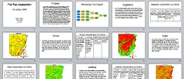
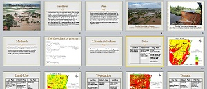
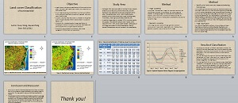
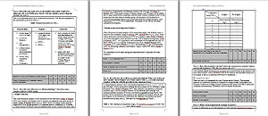
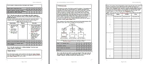
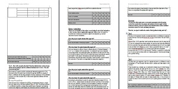

Project Management
Projects in Environmental Science
In my field of study -- Environmental Science, researching and managing academic projects is one of the common assignments for us. In general, there are some major steps in the process of making a research project, they are setting the problems and aim, collecting information and resources, designing the methodology, proposing the hypothesis, implementing the methods, recording data and results and finally, discussion and analysis. It is alsways required for a clear question and precise procedure in Environmental Science. Some screen shots of projects of my courses are shown as below.
 Fire Risk Assessment Flood Risk Analysis
 Land Cover Classification Water Hyacinth Phytoaccumulation Study (a)
 Water Hyacinth Phytoaccumulation (b) Water Hyacinth Phytoaccumulation (c)